Vor dem Einsatz ist das geeignete Anschlagmittel aus Chemiefasern entsprechend der vorgesehenen Anschlagart, der erforderlichen Tragfähigkeit und der Oberfläche der Last auszuwählen (Bild 1-1).
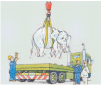
Bild 1-1: Anschlagmittel richtig auswählen
Nicht jede auf dem Etikett dargestellte Anschlagart ist auch für jeden Lastenanschlag geeignet. – Siehe Kennzeichnung auf dem Etikett – (Bild 1-2).
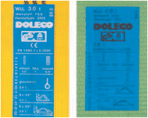
Bild 1-2: Angaben auf Etiketten beachten
Anschlagmittel aus Chemiefasern dürfen nicht geknotet werden (Bild 1-3).
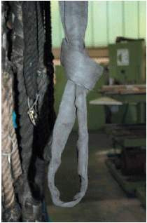
Bild 1-3: Unzulässiger Knoten in einer Rundschlinge
Anschlagmittel aus Chemiefasern dürfen nicht über scharfe Kanten gespannt und nicht über scharfe Kanten oder aufrauend wirkende Oberflächen gezogen werden (Bild 1-4).
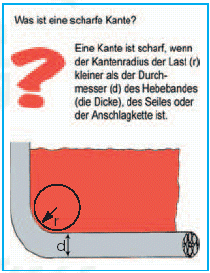
Bild 1-4: Scharfe Kante
Bei Lasten mit scharfen Kanten oder aufrauend wirkenden Oberflächen dürfen Anschlagmittel aus Chemiefasern nur dann eingesetzt werden, wenn die gefährdeten Stellen des Anschlagmittels geschützt sind. Der Schutz muss nicht nur die unteren, sondern auch die oberen scharfen Kanten umfassen. Dies wird z. B. durch einen Schutzschlauch oder Festbeschichtung erreicht (Bilder 1-5 und 1-6).
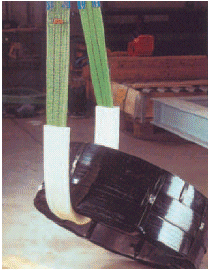
Bild 1-5: Kantenschutz – Schutzschlauch
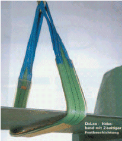
Bild 1-6: Kantenschutz – Festbeschichtung
Beim Wenden von Coils sind diese vorher vom Stapel auf den Boden zu legen und anschließend am Boden zu wenden, sodass der Kantenschutz des beweglichen Schutzbandes auch nach dem Wenden die oberen Kanten umfasst (Bild 1-7).
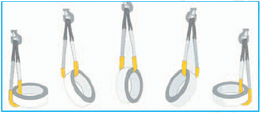
Bild 1-7: Wenden von Coils
Anschlagmittel aus Chemiefasern müssen so um die Last gelegt werden, dass sie mit ihrer ganzen Breite tragen (Bild 1-8).
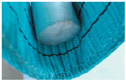
Bild 1-8: Unzulässige Auflage der Last im Hebeband
Auf Anschlagmittel aus Chemiefasern dürfen Lasten nicht abgesetzt werden, wenn das Band bzw. die Rundschlinge dadurch beschädigt werden kann (Bild 1-9).
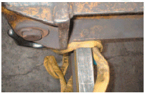
Bild 1-9: Beschädigung einer Rundschlinge durch darauf abgesetzte Traverse
Anschlagmittel aus Chemiefasern sind so zu verwenden, dass die Last gegen Herabfallen gesichert ist. Hierbei ist insbesondere zu beachten, dass im Hängegang (umgelegt, siehe Bild 1-10) nicht angeschlagen werden darf. Ein Verrutschen der Last muss verhindert sein.
großstückiger Lasten, sofern ein Zusammenrutschen der Anschlagmittel und eine Verlagerung der Last verhindert ist (Bild 1-10),
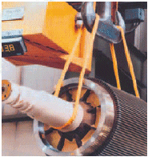
Bild 1-10: Sicherer Hängegang
langer stabförmiger Lasten, sofern eine Schrägstellung der Traverse
zwangsläufig verhindert und die Last so unterfangen ist, dass sie sich nicht
übermäßig durchbiegt.
Eine Schrägstellung der Traverse braucht nicht zwangsläufig verhindert zu sein,
wenn durch die Beschaffenheit und die Oberfläche der Last sowie durch den Anschlag ein
Herausrutschen der Last oder von Teilen der Last verhindert ist (Bild 1-11).
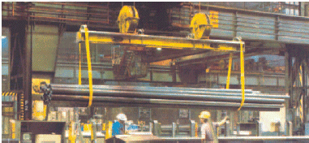
Bild 1-11: Sicheres Anschlagen langer Lasten
Zum Anschlagen von Lasten in der Anschlagart "geschnürt" dürfen Anschlagmittel aus Chemiefasern mit Endschlaufen nur verwendet werden, wenn diese verstärkt sind. Entsprechend DIN EN 1492-1 dürfen Hebebänder nur noch mit Endschlaufenverstärkung verwendet werden (Bild 1-12).
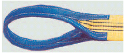
Bild 1-12: Verstärkte Schlaufe
Anschlagmittel aus Chemiefasern mit hoher Quersteifigkeit dürfen in der Anschlagart "geschnürt" nur verwendet werden, wenn sie im Bereich der Schnürung mit Beschlagteilen ausgerüstet sind, die eine Auflage in der gesamten Breite des Hebebandes gewährleisten (Bild 1-13).
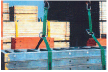
Bild 1-13: Sichere Auflage durch Beschlagteile
Anschlagmittel aus Chemiefasern müssen so angeschlagen werden, dass der Öffnungswinkel der Endschlaufen an den Verbindungsstellen 20° (siehe Bild 1-14) nicht überschreitet.
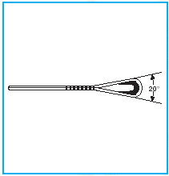
Bild 1-14: Öffnungswinkel von Endschlaufen
Bei zu kurzen Schlaufen kann z. B. mit Reduziergehängen oder Schäkeln der zulässige Öffnungswinkel eingehalten werden.